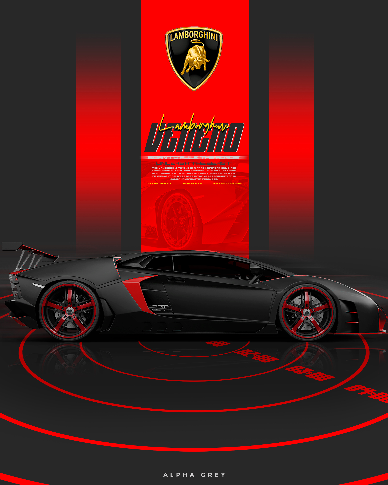

UNDERGRADUATE · COMPLETED
BSc in Computer Science
St. Pauls College, Bengaluru
Graduated in 2025
I’m Ajay — a graphic designer and Director of Photography creating thoughtful visual identities, engaging digital designs, and visual stories through photography and film.

I’m a Graphic Designer and Director of Photography at Mount Carmel (Deemed to be University), Bengaluru. My work brings together visual design, photography, storytelling and digital creativity to communicate ideas with clarity and emotion.
I enjoy shaping concepts into polished visuals — from graphic design and social media creatives to photography, visual coverage and cinematic artwork. I’m also pursuing an MCA, expanding my technical foundation alongside my creative practice.
A foundation in computer science, with continued learning in technology and digital systems.
St. Pauls College, Bengaluru
Graduated in 2025
Cybersecurity & Forensics
SRM Online — currently pursuing
Creating graphic design and visual communication assets, supporting photography and video production, and helping bring institutional stories and events to life through strong visual content.
Internship experience supporting interface design and digital product work.
Created and supported visual content for social media and marketing communication.
Explore photography, DOP frames, posters, cinematic artwork and graphic design projects.
 01 / VISUAL DESIGN
01 / VISUAL DESIGN
Posters, branding, digital artwork and visual identities.
Explore graphic design ↗
02 / BEHIND THE LENSPhotography, cinematic frames and visual storytelling.
Explore photography ↗ 03 / DIGITAL EXPERIENCES
03 / DIGITAL EXPERIENCES
User interfaces, thoughtful experiences, wireframes and prototypes.
Explore UI/UX design ↗For graphic design, photography, visual direction, event coverage and creative collaborations, get in touch.